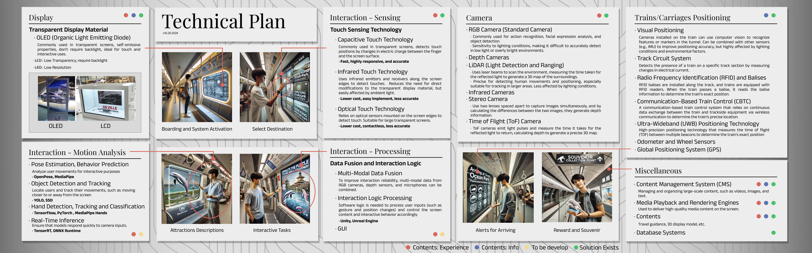
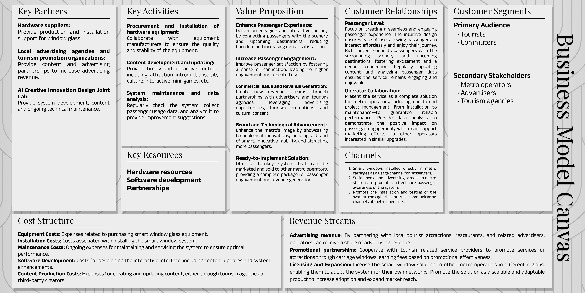
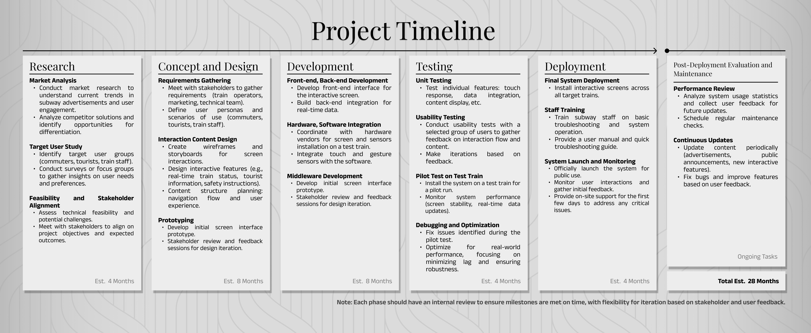

港铁 XR 互动体验设计企划：通过无接触 XR 技术增强乘客互动
这部分的内容是以Booklet的形式在会议中传阅的，因此我尝试了多种方式来让内容更易于阅读。最终敲定的方案是使用大型宽版卡纸来呈现内容，以符合围桌讨论的场景。
这部分单独抽离出来，因为我是设计项目中该部分的核心贡献者。Technical Plan部分主要负责将现有的技术实现方法与之前AI生成的场景图结合，明确各功能的实现方式和预期可选择方案；BMC部分则从商业运营角度出发，分析了当前项目的各种条件、切入点、资源需求等内容；项目时间轴是我对整个设计落地的初步构想情况（并非最终版本）。
仅作展示